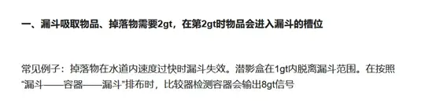
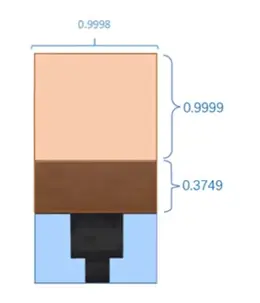
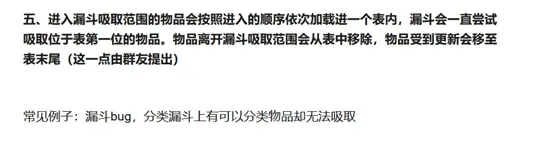
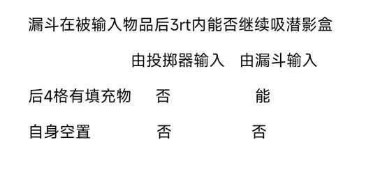
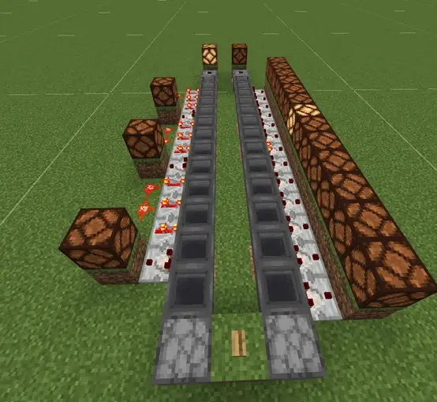
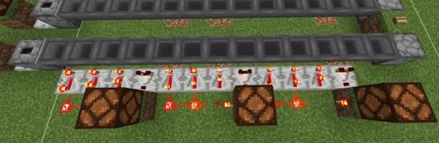
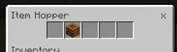
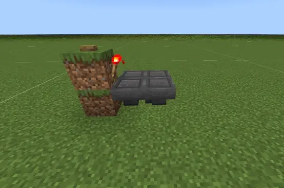
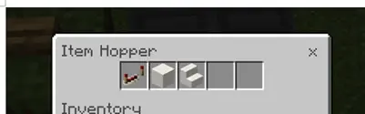
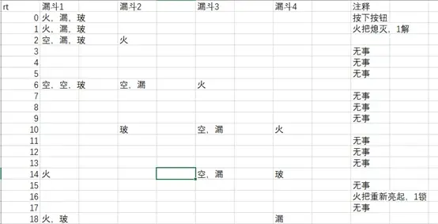

MCBE 漏斗一些行为的补充和介绍
前言：
2021年3月，汤圆发布了基石专栏第一个篇目：漏斗的行为
感谢学姐的trapdoor插件
时隔两年，这份资料是对上面文章漏斗行为的部分修正与设定补充
● 修正一：漏斗行为与红石刻绑定
漏斗行为与基岩版红石刻挂钩，只在红石刻里运行。
不了解基岩版红石刻的请看这篇专栏：
https://www.bilibili.com/read/cv7581645
比如常见的漏斗锁住与解锁、漏斗的吸收和放出。

而汤圆专栏第一段内容实际上是有一定错误的。
实际上游戏刻度只有进入红石刻的时候，漏斗会检测吸收范围内是否有物品，如果上方有物品漏斗才会执行吸收。如果是非红石刻，漏斗不会执行吸收和传输这个行为。所以实际上只需要1gt就可以了，但是实际做全物品的时候，建议还是每经过1个漏斗至少2gt。
● 修正二：漏斗的吸收范围
这其实没啥好说的。
链接：https://bugs.mojang.com/browse/MCPE-55824
Mojang在基岩版1.19.70修改了漏斗的吸收范围。
修正图如下：

漏斗吸收范围其他具体内容可以移到maple的专栏查看：
https://www.bilibili.com/read/cv16438222
● 修正三：分类漏斗摸鱼被修复了（划去）

此问题在基岩版1.19.60已经修复。不会一直尝试吸收表第一位物品了。（具体内容不想写了，划去）
不过请注意。这个和跨区块漏斗不吸收不是一个东西。跨区块漏斗不吸问题依旧存在，这个仅是分类漏斗上方遇到多种类物品时开摆的bug的修复。
修正差不多写到这里了，接下来是额外的补充内容
额外的补充来自 [Mod] GoldenHelmet，感谢他对于这些bug的介绍与分享
https://bugs.mojang.com/browse/MCPE-166990，
我们先知道漏斗几个重要的行为：
1漏斗会优先输出漏斗里格子最前面的物品。
2漏斗会先优先输出物品，再被输入物品 。
3漏斗只要输出或者吸收物品，自己都会进入8gt冷却。
要记住这几个行为，下面讲的内容与这些行为息息相关。

你摸不着头脑吧（注释1rt = 2gt）
首先，漏斗自身输入和输出物品行为的完成之后，就会进入8gt的冷却。那么我们首先把进入冷却的漏斗叫做非闲置状态，没有进入冷却的漏斗称为闲置状态。
那么发生了什么？
先讲结论吧：
● 漏斗为空漏斗：
如果漏斗处于闲置状态,无论漏斗是否被锁上，只要有物品输入就会进入冷却
● 漏斗内不为空：
如果被锁，那么被漏斗输入物品，则不会进入冷却，而是一直处于闲置状态（重点）（上图的唯一的能）
不过有例外，漏斗在闲置状态下被投掷器投入物品，则会进入8gt冷却
还有其他测试的结果：
1玩家对漏斗输入输出不会让漏斗进入冷却cd
2漏斗冷却cd不会被重置，无论在什么情况下。不过活塞推动漏斗会影响甚至延长漏斗冷却。（mb状态下漏斗冷却暂停）
结论第二点是重点，因为我们可以利用这个做一个快速运输的漏斗链：
我们从第二个结论得知：漏斗如果被锁，而且漏斗里有物品，其他漏斗对这个漏斗进行输入动作都不会让这个漏斗进入冷却状态。
这样漏斗如果被解开，那么下个时刻漏斗会立马输入输出物品。

而做一个连续的这样的漏斗链，让漏斗依次被解开，这样的漏斗链运输物品的速度远快于1条普通漏斗链的速度。


在被锁的漏斗里第二格填充物品即可。
接下来是第二个：著名的漏斗链输送随机：
链接小介绍：https://bugs.mojang.com/browse/MCPE-28890（mojang表示我不修）
如图所示：

在红石火把被锁的下面漏斗物品是这样填装的
然而按下按钮之后，等物品转一圈回来发现漏斗里的排序会导向两个结果：
这是正常的结果

这是另一种
欸？发生了什么？
这是漏斗前后更新顺序不同导致的结果。
有一个abcd漏斗
在1红石刻度里4个漏斗都要同时更新进行输出，而漏斗不可能都“一起进行的“，只能在1红石刻下有一个先后更新顺序，比如这个时刻先更新a再b再c后d，或者先b后c后a最后是d。而4个漏斗更新顺序不一样导致出现了这种现象。
（图中示范）

这个其实对漏斗链影响挺大的，假如说用漏斗链分类，在箱子末尾看到有没分类成功的，不要意外，是这个在作妖哦！
重点：其实根据漏斗更新顺序，可以理想化做一个无延迟漏斗链。
将漏斗快速输送与漏斗更新顺序结合起来
就是在abcdef…漏斗链里后面4格填充物品，锁住。在a漏斗第一格输入物品，迅速解开，漏斗以理想下的由a更新到最后一个，之后漏斗再锁上。最终在1个红石刻内第一格物品在a漏斗瞬移达到最后一个
现实是：由于mojang随机的更新机制，无法很好的控制，至少对于现在来说无法实现。
链接：https://www.bilibili.com/read/cv6013612
所以这个坑只能交给其他有兴趣的人实现了。（不建议，这是天坑）
至于有兴趣研究无延迟投掷的，的可以去看sac写的无延迟投掷链专栏：
https://www.bilibili.com/read/cv15587328
鸣谢
金色头盔GoldenHelmet分享的存档和对此相关的介绍
hhhxiao_提供的trapdoor插件和对游戏代码的挖掘让我们能更加深刻的理解游戏机制
Misac_为漏斗快速输送提供的资料和相关分享
如果您对本文有异议或者发现勘误，请私信我，我会尽快改正。